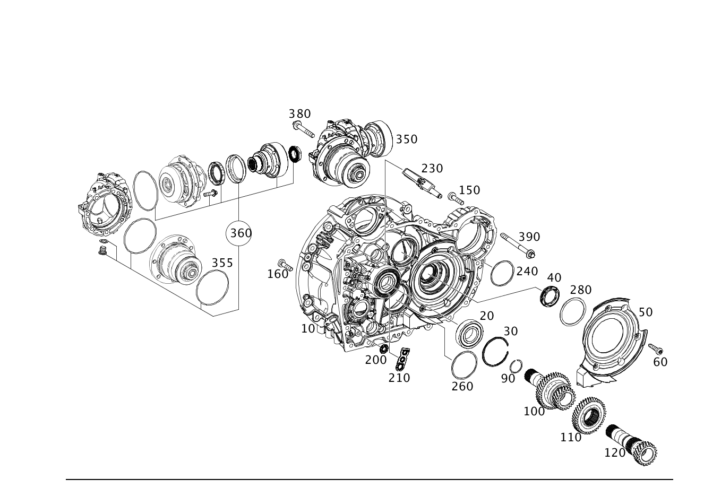

| № | Артикул | Название | Кол. | Примечание | Ограничение |
|---|---|---|---|---|---|
| 10 | A 246 270 30 00 | - Картер сцепления | 1 | G001/G002/G003/G004/G020/G021 | |
| 10 | A 246 270 35 00 | - Картер сцепления | 1 | ||
| 10 | A 246 270 49 00 | - Картер сцепления (CLUTCH HOUSING) | 1 | ||
| 20 | A 010 981 83 25 | - Рад. шарикоподшипник (DEEP-GROOVE BALL BEARING) | 1 | ||
| 30 | A 005 994 01 40 | - Пруж. стопорное кольцо (SNAP RING) | 1 | 1.65 MM | |
| 30 | A 005 994 53 40 | - Пруж. стопорное кольцо (SNAP RING FOR BORE) | 1 | 1.95 MM | |
| 30 | A 005 994 54 40 | - Пруж. стопорное кольцо (SNAP RING FOR BORE) | 1 | 2.00 MM | |
| 30 | A 005 994 55 40 | - Пруж. стопорное кольцо (SNAP RING FOR BORE) | 1 | 2.05 MM | |
| 30 | A 005 994 56 40 | - Пруж. стопорное кольцо (SNAP RING FOR BORE) | 1 | 2.10 MM | |
| 30 | A 005 994 57 40 | - Пруж. стопорное кольцо (SNAP RING FOR BORE) | 1 | 2.15 MM | |
| 30 | A 005 994 58 40 | - Пруж. стопорное кольцо (SNAP RING FOR BORE) | 1 | 2.20 MM | |
| 30 | A 005 994 59 40 | - Пруж. стопорное кольцо (SNAP RING FOR BORE) | 1 | 2.25 MM | |
| 40 | A 013 997 19 46 | - Радиальный сальник (RADIAL SHAFT SEALING RING) | 1 | ||
| 50 | A 246 371 00 88 | - Крышка (COVER) | 1 | ||
| 60 | N 000000 004555 | - Винт с 6-гр. глвк (HEXALOBULAR SCREW) | 3 | Кожух к корпусу коробки передач | |
| 90 | A 002 994 73 40 | - Пруж. стопорное кольцо (SNAP RING) | 1 | ||
| 100 | A 246 260 72 20 | - Полый вал (HOLLOW SHAFT) | 1 | G004/G011/G003/G020/G021/G033/G044 | |
| 110 | A 246 262 37 14 | - Шестерня 4-й передачи (FIXED GEAR, 4TH GEAR) | 1 | -(G001/G002/G015/G016/G042/G043/G045) | |
| 110 | A 246 262 59 00 | - Неподвижная шестерня (FIXED GEAR) | 1 | ||
| 120 | A 246 262 14 01 | - Полый вал (HOLLOW SHAFT) | 1 | ||
| 150 | N 000000 006426 | - Винт с 6-гр. глвк (HEXALOBULAR SCREW) | 20 | Корпус; M8X35 | |
| 160 | N 000000 002439 | - Винт с 6-гр. глвк (HEXALOBULAR SCREW) | 2 | Корпус; M6X25 | |
| 200 | A 246 371 02 80 | - Прокладка фланца (FLANGE SEAL) | 2 | Сервопривод переключения передач | |
| 210 | A 246 371 00 80 | - Прокладка фланца (FLANGE SEAL) | 1 | Сцепление | |
| 230 | A 246 371 07 96 | - Маслопровод (OIL LINE) | 1 | Датчик температуры | |
| 230 | A 246 371 15 00 | - Маслопровод (OIL LINE) | 1 | Датчик температуры | |
| 240 | A 008 990 22 82 | - Компенсационная шайба (SHIM) | NB | 1,40 MM; 1,40 MM | |
| 240 | A 008 990 23 82 | - Компенсационная шайба (SHIM) | NB | 1,45 MM | |
| 240 | A 008 990 24 82 | - Компенсационная шайба (SHIM) | NB | 1,50 MM | |
| 240 | A 008 990 25 82 | - Компенсационная шайба (SHIM) | NB | 1,55 MM | |
| 240 | A 008 990 26 82 | - Компенсационная шайба (SHIM) | NB | 1,60 MM | |
| 240 | A 008 990 27 82 | - Компенсационная шайба (SHIM) | NB | 1,65 MM | |
| 240 | A 008 990 28 82 | - Компенсационная шайба (SHIM) | NB | 1,70 MM | |
| 240 | A 008 990 29 82 | - Компенсационная шайба (SHIM) | NB | 1,75 MM | |
| 240 | A 008 990 30 82 | - Компенсационная шайба (SHIM) | NB | 1,80 MM | |
| 240 | A 010 990 15 82 | - Компенсационная шайба (SHIM) | NB | 1,10 MM | |
| 240 | A 010 990 16 82 | - Компенсационная шайба (SHIM) | NB | 1,15 MM | |
| 240 | A 010 990 17 82 | - Компенсационная шайба (SHIM) | NB | 1,20 MM | |
| 240 | A 010 990 18 82 | - Компенсационная шайба (SHIM) | NB | 1,25 MM | |
| 240 | A 010 990 19 82 | - Компенсационная шайба (SHIM) | NB | 1,30 MM; 1,30 MM | |
| 240 | A 010 990 20 82 | - Компенсационная шайба (SHIM) | NB | 1,35 MM; 1,35 MM | |
| 260 | A 008 990 11 82 | - Компенсационная шайба (SHIM) | NB | 1,45 MM; 1,45 MM | |
| 260 | A 008 990 12 82 | - Компенсационная шайба (SHIM) | NB | 1,50 MM | |
| 260 | A 008 990 13 82 | - Компенсационная шайба (SHIM) | NB | 1,55 MM | |
| 260 | A 008 990 14 82 | - Компенсационная шайба (SHIM) | NB | 1,60 MM | |
| 260 | A 008 990 15 82 | - Компенсационная шайба (SHIM) | NB | 1,65 MM | |
| 260 | A 008 990 16 82 | - Компенсационная шайба (SHIM) | NB | 1,70 MM | |
| 260 | A 008 990 17 82 | - Компенсационная шайба (SHIM) | NB | 1,75 MM | |
| 260 | A 008 990 18 82 | - Компенсационная шайба (SHIM) | NB | 1,80 MM | |
| 260 | A 008 990 19 82 | - Компенсационная шайба (SHIM) | NB | 1,85 MM | |
| 260 | A 008 990 20 82 | - Компенсационная шайба (SHIM) | NB | 1,90 MM | |
| 260 | A 010 990 21 82 | - Компенсационная шайба (SHIM) | NB | 1,10 MM | |
| 260 | A 010 990 22 82 | - Компенсационная шайба (SHIM) | NB | 1,15 MM | |
| 260 | A 010 990 23 82 | - Компенсационная шайба (SHIM) | NB | 1,20 MM | |
| 260 | A 010 990 24 82 | - Компенсационная шайба (SHIM) | NB | 1,25 MM | |
| 260 | A 010 990 25 82 | - Компенсационная шайба (SHIM) | NB | 1,30 MM; 1,30 MM | |
| 260 | A 010 990 26 82 | - Компенсационная шайба (SHIM) | NB | 1,35 MM; 1,35 MM | |
| 260 | A 010 990 27 82 | - Компенсационная шайба (SHIM) | NB | 1,40 MM; 1,40 MM | |
| 280 | A 008 990 33 82 | - Компенсационная шайба (SHIM) | NB | 1,35MM | |
| 280 | A 008 990 34 82 | - Компенсационная шайба (SHIM) | NB | 1,40MM | |
| 280 | A 008 990 35 82 | - Компенсационная шайба (SHIM) | NB | 1,45MM | |
| 280 | A 008 990 36 82 | - Компенсационная шайба (SHIM) | NB | 1,50MM | |
| 280 | A 008 990 37 82 | - Компенсационная шайба (SHIM) | NB | 1,55MM | |
| 280 | A 008 990 38 82 | - Компенсационная шайба (SHIM) | NB | 1,60MM | |
| 280 | A 008 990 39 82 | - Компенсационная шайба (SHIM) | NB | 1,65MM | |
| 280 | A 008 990 40 82 | - Компенсационная шайба (SHIM) | NB | 1,70MM | |
| 280 | A 008 990 41 82 | - Компенсационная шайба (SHIM) | NB | 1,75MM | |
| 280 | A 010 990 28 82 | - Компенсационная шайба (SHIM) | NB | 1,10MM | |
| 280 | A 010 990 29 82 | - Компенсационная шайба (SHIM) | NB | 1,15MM | |
| 280 | A 010 990 30 82 | - Компенсационная шайба (SHIM) | NB | 1,20MM; 1,20MM | |
| 280 | A 010 990 31 82 | - Компенсационная шайба (SHIM) | NB | 1,25MM; 1,25MM | |
| 280 | A 010 990 32 82 | - Компенсационная шайба (SHIM) | NB | 1,30MM | |
| 355 | A 000 997 84 11 | - Кольцевая прокладка (O-RING) | 1 | 94.92X2.62MM | |
| 400 | A 246 370 21 02 | - Корпус АКПП (HOUSING, AUTO. TRANSM.) | 1 | [417] БОЛЬШЕ НЕ ПОСТАВЛЯЕТСЯ, ЗАКАЗЫВАТЬ КОМПЛЕКТ ПОСТАВКИ | -(G011/G015/G016) |
| 400 | A 246 370 31 03 | - Корпус АКПП (HOUSING, AUTO. TRANSM.) | 1 | -(G011/G015/G016) | |
| 400 | A 246 370 09 02 | - Корпус АКПП (HOUSING, AUTO. TRANSM.) | 1 | -(G011/G015/G016) | |
| 400 | A 246 370 27 03 | - Корпус АКПП (HOUSING, AUTO. TRANSM.) | 1 | -(G011/G015/G016) | |
| 405 | N 005401 309000 | - Шар (BALL) | 1 | В корпусе | |
| 420 | A 010 981 46 25 | - Рад. шарикоподшипник (DEEP-GROOVE BALL BEARING) | 1 | ||
| 425 | A 002 994 91 40 | - Пруж. стопорное кольцо (SNAP RING FOR SHAFT) | 1 | ||
| 430 | A 246 370 03 21 | - Крышка корпуса АКП (COVER, TRANSM. HOUSING) | 1 | ||
| 440 | A 012 994 32 41 | - Стопорн. кольцо отверстия (RETAINING RING FOR BORE) | 1 | ||
| 450 | A 013 997 19 46 | - Радиальный сальник (RADIAL SHAFT SEALING RING) | 1 | ||
| 460 | A 012 994 22 41 | - Стопорн. кольцо отверстия (RETAINING RING FOR BORE) | 1 | ||
| 470 | A 246 371 03 05 | - Крышка корпуса АКП (COVER, TRANSM. HOUSING) | 1 | ||
| 480 | A 246 371 01 88 | - Крышка (COVER) | 1 | Дифференциал | |
| 480 | A 246 371 39 00 | - Крышка корпуса КП (COVER, TRANSM. HOUSING) | 1 | Дифференциал | |
| 480 | A 247 371 11 00 | - Крышка корпуса КП (COVER, TRANSM. HOUSING) | 1 | Дифференциал | |
| 490 | N 000000 001147 | - Винт с 6-гр. глвк (HEXALOBULAR SCREW) | 2 | Накладка; M6X20 | |
| 520 | N 000000 002778 | - Цилиндрический штифт (CYLINDER PIN) | 2 | В корпусе | |
| 530 | A 601 992 02 25 | - Зажимная гильза (CLAMPING SLEEVE) | 2 | В корпусе | |
| 560 | A 246 372 01 61 | - Направляющая воронка (OIL FUNNEL) | 1 | Малого размера [414] СТАРУЮ ДЕТАЛЬ УСТАНАВЛИВАТЬ БОЛЬШЕ НЕ РАЗРЕШАЕТСЯ | |
| 560 | A 246 371 60 00 | - Направляющая воронка (OIL FUNNEL) | 1 | Малого размера | |
| 570 | A 246 372 03 61 | - Направляющая воронка (OIL FUNNEL) | 1 | Большой [414] СТАРУЮ ДЕТАЛЬ УСТАНАВЛИВАТЬ БОЛЬШЕ НЕ РАЗРЕШАЕТСЯ | |
| 570 | A 246 371 61 00 | - Направляющая воронка (OIL FUNNEL) | 1 | Большой | |
| 610 | A 246 377 01 35 | - Гидравлический клапан (HYDRAULIC VALVE) | 1 | В корпусе | |
| 620 | A 009 993 98 01 | - Нажимная пружина (COMPRESSION SPRING) | 1 | Исполнительный элемент | |
| 630 | A 246 988 06 52 | - Постоянный магнит (PERMANENT MAGNET) | 1 | Исполнительный элемент | |
| 630 | A 246 988 07 52 | - Постоянный магнит (PERMANENT MAGNET) | 1 | Исполнительный элемент | |
| 635 | N 000000 003439 | - Винт с 6-гр. глвк (HEXALOBULAR SCREW) | 1 | Магнит; M5X10 | |
| 640 | A 246 376 02 35 | - Опорный кронштейн (BEARING BRACKET) | 1 | ||
| 640 | A 247 372 25 00 | - Опорный кронштейн (BEARING BRACKET) | 1 | ||
| 650 | A 246 372 02 74 | - Штифт собачки (BOLT, LOCKING PAWL) | 1 | ||
| 660 | A 246 371 02 16 | - Собачка (LOCKING PAWL) | 1 | ||
| 660 | A 246 371 42 00 | - Собачка (LOCKING PAWL) | 1 | ||
| 670 | A 000 993 19 35 | - Спиральная пружина (SPIRAL SPRING) | 1 | ||
| 680 | N 000000 005625 | - Цилиндрический штифт (CYLINDER PIN) | 1 | ||
| 700 | A 011 990 92 04 | - Винт Torx с полукр. гол. (PAN HEAD SCREW) | 1 | M8X46 | |
| 710 | A 000 997 37 42 | - Уплотнительная шайба (SEALING DISK) | 1 | ||
| 740 | A 246 982 03 03 | - Электромагнит (LIFT SOLENOID) | 1 | ||
| 750 | N 000000 001145 | - Винт с 6-гр. глвк (HEXALOBULAR SCREW) | 2 | К линейному электромагнитному приводу; M6X12 | |
| 780 | A 246 270 22 00 | - Воздушный клапан (BREATHER) | 1 | ||
| 785 | A 019 997 60 45 | - Кольцевая прокладка (O-RING) | 1 | 9.25X1.78 | |
| 800 | A 246 906 02 02 | - Исполнительный элемент (ACTUATOR COMPONENT) | 1 | Собачка | |
| 860 | A 210 997 00 32 | - Резьбовая пробка (SCREW PLUG) | 1 | Маслосливное отверстие | |
| 865 | N 007603 024105 | - Уплотнительное кольцо (SEALING RING) | 1 | Маслосливное отверстие |
Позиций: 116 · подписано на схемах: 116 · колесо — плавный зум в курсор, перетаскивание — пан, двойной клик — зум, клик по артикулу — скопировать.